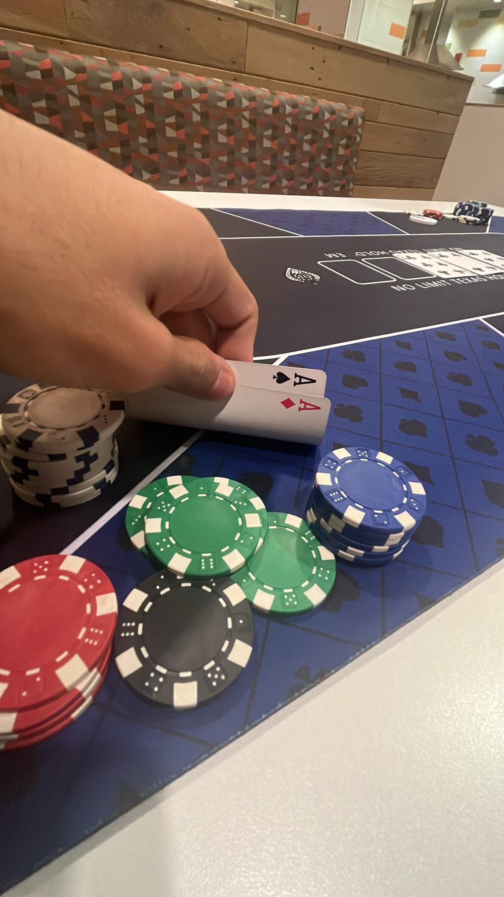
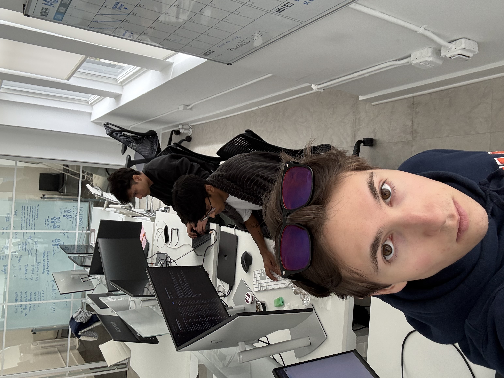
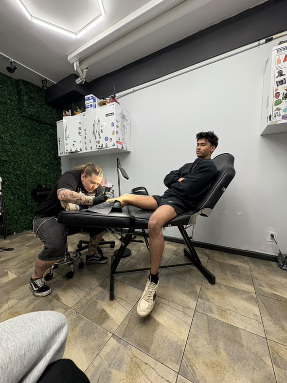
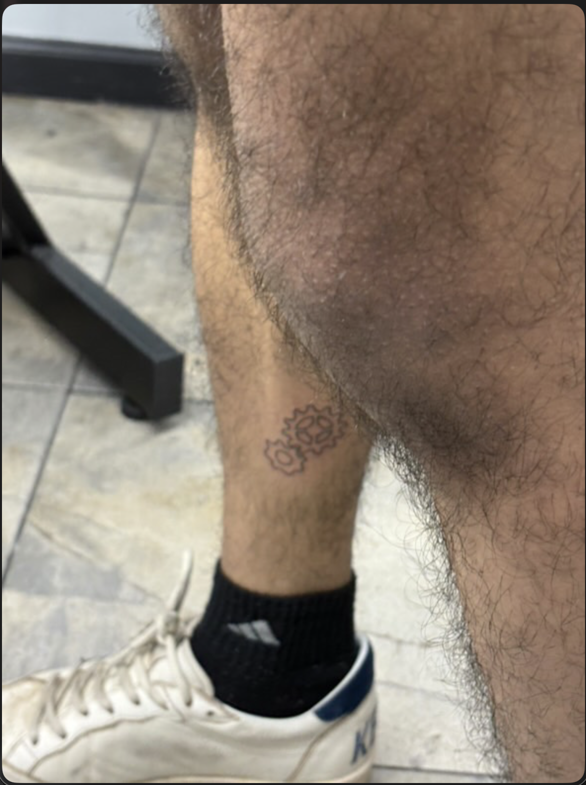
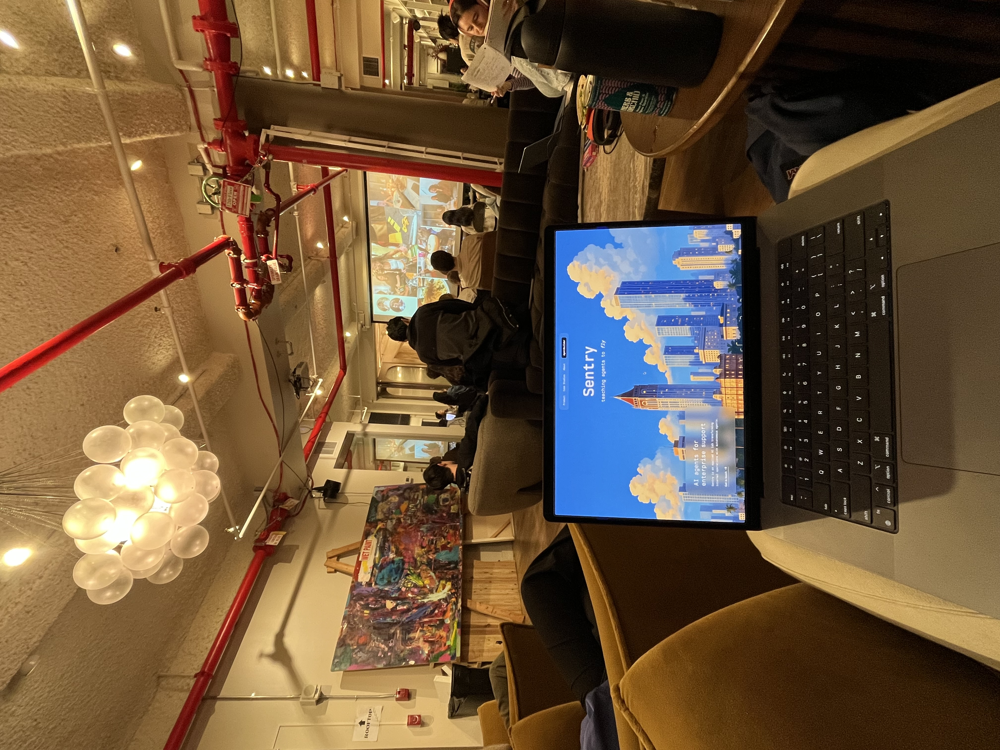
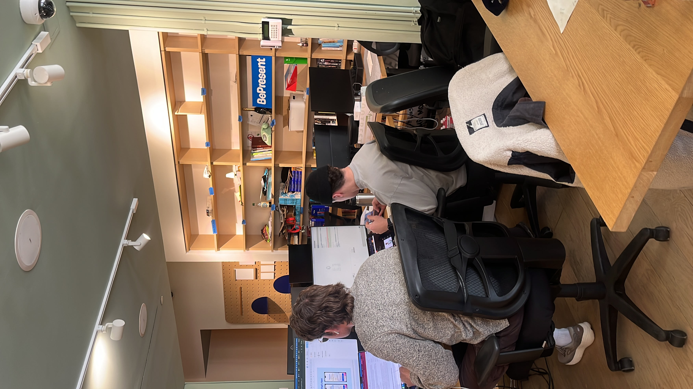
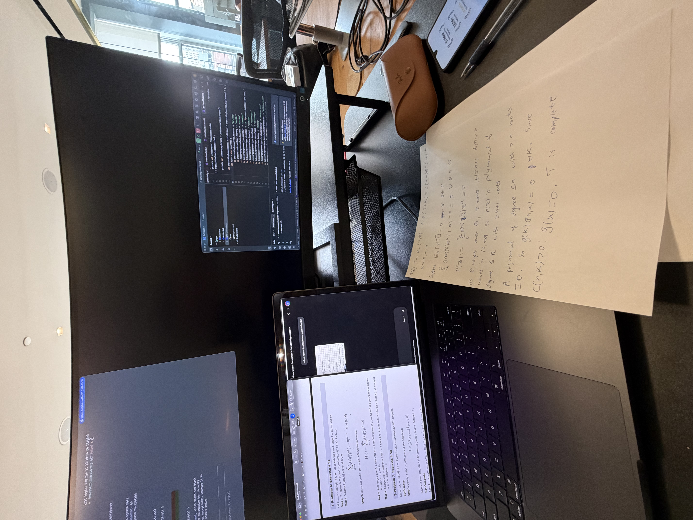

My dad gifted me my first device, an iPad, on my 11th birthday. I was then addicted to Clash of Clans for 3 years.
I used the iPad to earn my first internet $ at 14 by writing 'SEO optimized' (lol) wordpress articles on freelancer.com.
At 15, I entered an entrepreneurship competition. I didnt have an idea so I built websites for everyone around me who did. I won & recieved a Rs. 20,000 (~$250) investment from Namita Thapar. I blew it on my first pair of jordans.
At 18, I graduated from the most selective HS in India. Qualified for the AIME twice. Got a 1570 on the SAT. Youth wasted; I didnt build anyth cool. I fell in love with math though.
I spent most of freshmen year playing poker & failing exams. School didnt excite. I felt lost for 2 years.
Last summer, at 20, I rediscovered my love for building. I co-founded Atlas w my closest friends. We snuck into the Phia office on weekends to ship.
At the end of the summer, we parted ways. I got my first tattoo. And I decided to 'lock in' on building.
I built Sentry and shared it at Verci -- a coworking space in Flatiron that quickly became my 2nd home.
A few months later, I joined BePresent, my first 'job'. I got a desk at the Verci satellite for ~60 days and built their android app. I learnt to BePresent; stopped doomscrolling & got closer to god.
I missed an important meeting one day because I had to turn in a handwritten assignment. Frustrated, I decided to start building cheatnyu.com.